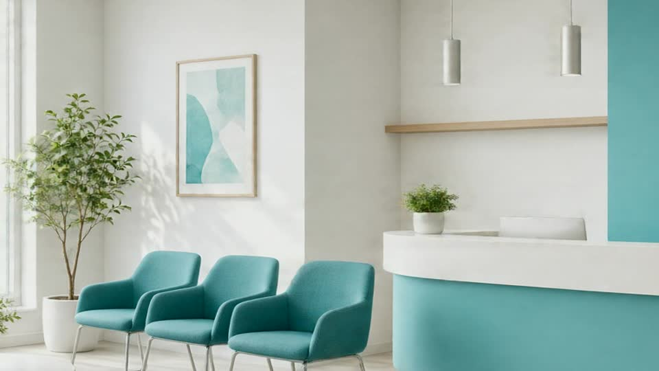

2019
Birinchi qabulxona, Gulxaniy ko'chasi.
Klinika
Toshkentdagi namoyish klinika: terapiya, LOR, pediatriya, laboratoriya va video qabul. Maqsad — navbatni tushunarli qilish.
Birinchi qabulxona, Gulxaniy ko'chasi.
Laboratoriya va UZI xonasi qo'shildi.
6 ta shahar oynasi va onlayn navbat.

Dushanba–shanba 09:00–16:00. Yakshanba dam. Tez yordam emas.
Manzil: Toshkent, Shayxontohur, Gulxaniy 12. Telefon: +998 55 500 52 52.